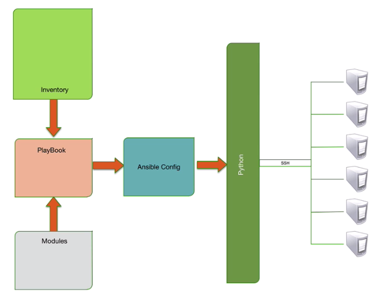

CentOS (centos/7) setup (remote hosts)
# install from source with pip
sudo yum install gcc -y
sudo yum install python-setuptools -y
sudo easy_install pip
sudo yum install python-devel -y
sudo pip install ansible
# amending the /etc/ssh/sshd_config 'PasswordAuthentication yes'
# then re-started the service 'sudo systemctl restart sshd'
sudo sed -i 's/PasswordAuthentication no/PasswordAuthentication yes/g' /etc/ssh/sshd_config;
sudo systemctl restart sshd
# Alternatively, you can install ansible this way
sudo yum install epel-release -y
sudo yum install ansible -yUbuntu (ubuntu/xenial64) setup (access control host)
sudo apt-add-repository ppa:ansible/ansible -y
sudo apt-get update && sudo apt-get install ansible -y
# note: in order to make password based auth (-k) work, you have to enable it, e.g.
# vi /etc/ssh/sshd_config
# PasswordAuthentication yes
# $ service sshd restart
# also need ssh vagrant@192.168.33.20 to add finger print, -k will prompt password
# Or set host_key_checking=false in ansible.cfg
# https://stackoverflow.com/questions/42462435/ansible-provisioning-error-using-a-ssh-password-instead-of-a-key-is-not-possibl
ansible 192.168.33.20 -i inventory -u vagrant -m ping -kKey setup
Nowdays, most OS by default will disable the plain password based authentication for security reason. The alternative is public/private key based authentication. The idea is keep private key only on your local pc, and upload the public key to the remote host. Then the authentication can be done using PKS.
For ansible, the best way is using PKS for auth. Here is the normal flow for key deployment:
-
generate a key pair on any machine with ssh-keygen
-
upload pub key to the remote host
-
save the private key to your local pc
-
pass the private key when talking to reemote host. e.g.
# Using -vvv to print debug info
ansible -i '192.168.33.30,' all --private-key=./my_rsa_key_pair -m ping -u vagrant -vvvExecution and flow
-
evaluate the playbook and create a python package for the playbook
-
scp the python package to remote host tmp directory
-
python on remote run the package, and return result (with json) to ansible control server, then delete the package
-
continue with next play
Execution types
-
remote - upload package to remote and exec, mostly use webapi
-
local - when local (ansible server, not remote host) host executes plays
Ansible architecture

-
inventory maps hosts
-
configuration sets ansible parameters
-
modules define actions
-
playbooks to coordinate multiple plays (play is a single or set of task)
-
python to build the execution packages locally
-
ssh to deliver packages (the tasks) to remote and run
Ansible basic command
Include system, inventory file, module, and user
ansible <system>
-i <inventoryFile>
-m <module>
-a <module arguments>
-u <username>
-s Use "sudo" to run the commands
-k <password prompt>
--private-key=<path_to_private_key>
-v (-vv debug level2/-vvv debug level3)
# e.g.
# the ',' is important, it means list of values.
# not regular ping command, it just verify ability to login inventory and a usable python is configure.
ansible -i '192.168.33.30,' --private-key=./my_rsa_key_pair -m ping all -vvv -u vagrant
# run the ls command on all inventory
ansible -i '192.168.33.30,' --private-key=./my_rsa_key_pair all -m shell -a 'ls /' -vvv -u vagrantTerms
-
Inventory: ansible hosts file, i.e., the managed hosts ip, users etc
-
multiple inventory files for diff envs
-
-
Modules: A programmed unit of work to be done, e.g., yaml module
-
Playbook: Glue bring all modules together, it contains a set of plays. In other words, it is a set of plays build in specific order sequence to produce an expected outcome or outcomes across many different sets of hosts.
-
Play: a single or set of tasks using modules, executed on a defined set of hosts. e.g., copy a file, start a server, install a software, etc
-
Ansible Config: Global config, such as how many parallel operation sys perform. It can be overriden in following order (high-low):
-
$ANSIBLE_CONFIG, you can override specific settings by prefixing ANSIBLE_ to the name e.g., export ANSIBLE_FORKS=10, export ANSIBLE_host_key_checking=false, etc
-
./ansible.cfg
-
~/.ansible.cfg
-
/etc/ansible/ansible.cfg (may not exist)
-
-
Python:
-
Variables:
-
Host Variables - defined in inventory file per host or group
-
Facts - gathered from the remote managed host, such as ip, os, cpu speed
-
Dynamic variables - use data gathered by tasks or created at runtime
-
-
Ansible Module (such as ping, copy, yum, apt etc)
-
ansible-doc -l,ansible-doc yum
-
-
-
with_itemsto loop through an array/list, each element is nameditem, whereitem.0is index anditem.1is value
-